DeskPi Mini Cube
- New Product: ⭐⭐⭐⭐⭐
- Compability: ⭐⭐⭐⭐
- Mobility: ⭐⭐⭐⭐⭐
- Assemble Difficulty: ⭐

Purchase

Description
DeskPi Mini Cube for Raspberry Pi CM4 is a case with a miniature appearance and extremely portable features.
Note: Only supports Raspberry Pi CM4 module
The device provides a mini aluminum alloy radiator and integrates a silent fan that supports PWM speed regulation.
The bottom board provides a wealth of interfaces, supporting dual full-size HDMI interfaces, RJ45 Ethernet interfaces, 2x OTG USB port (dwc2 Overlay needs to be configured to enable it), and one PCIe interface supports M.2 NVME SSD M-KEY 2242 external storage.
The DIP switch on the back provides the special pins needed to configure the Raspberry Pi CM4 module. (On Compute Module 4 EMMC-DISABLE / nRPIBOOT (GPIO 40) must be fitted to switch the ROM to usbboot mode.)
Otherwise, the SPI EEPROM bootloader image will be loaded instead.
The 40Pin GPIO lead out and reserved RTC clock battery interface.
Features
- Integrated design
- Aluminum alloy radiator with PWM adjustable speed fan
- Power button
- 2 x Full-size HDMI ports
- 2 x OTG USB2.0 port
- 1 x PCIe M.2 NVME M-KEY 2242 SSD slot
- 1 x 40 Pin GPIO lead out
- 1 x DIP switch for mode change (CM4 function change)
- 1 x Onboard PCF85063 I2C RTC module
- 5V USB-C Port Power IN
Gallery
-
Product Outlook
-
Backside of Mini Cube 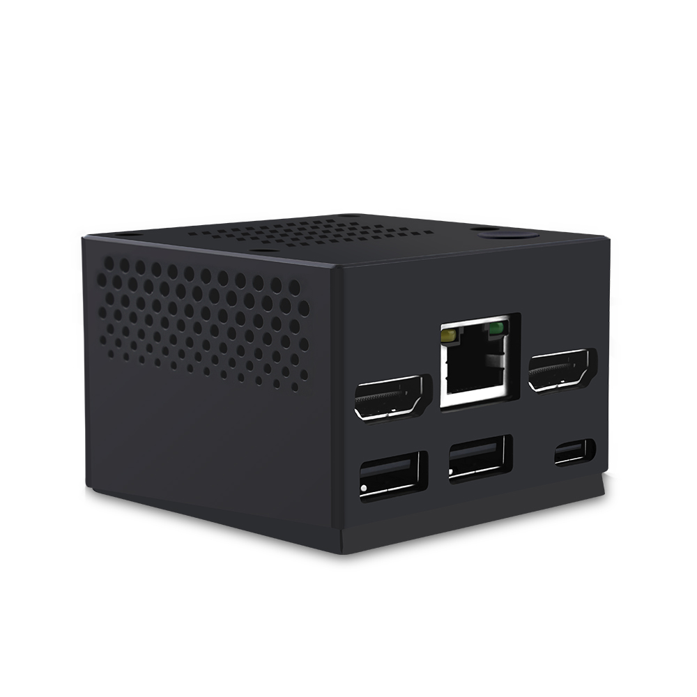
-
Ports Definitions 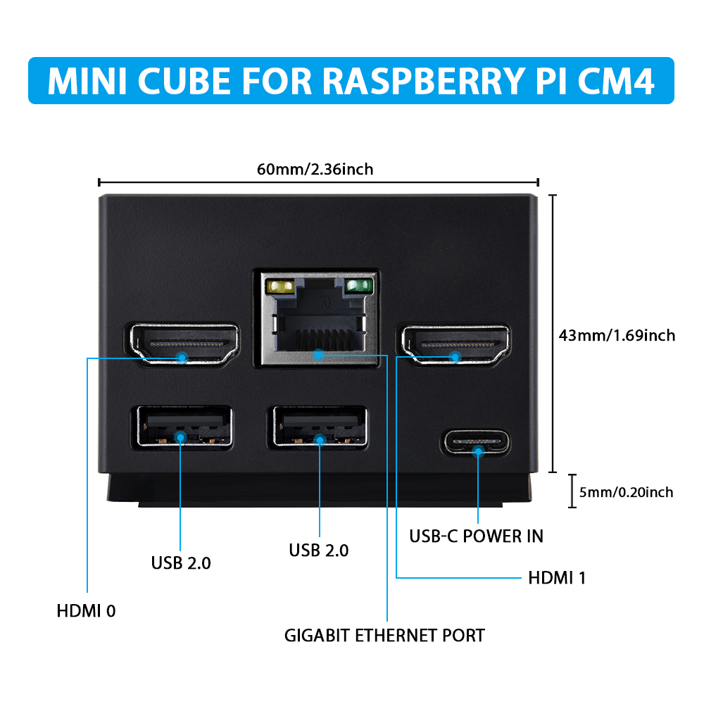
-
Inside of Mini Cube
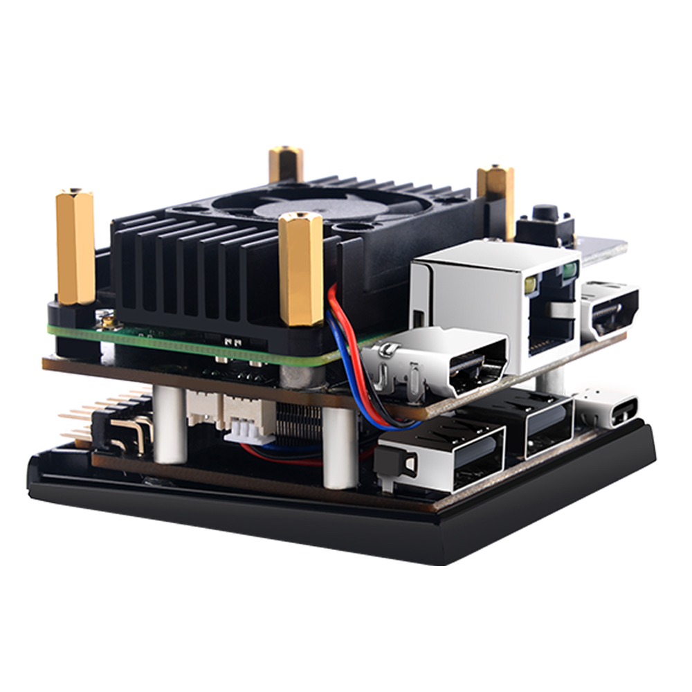 -
Dimension 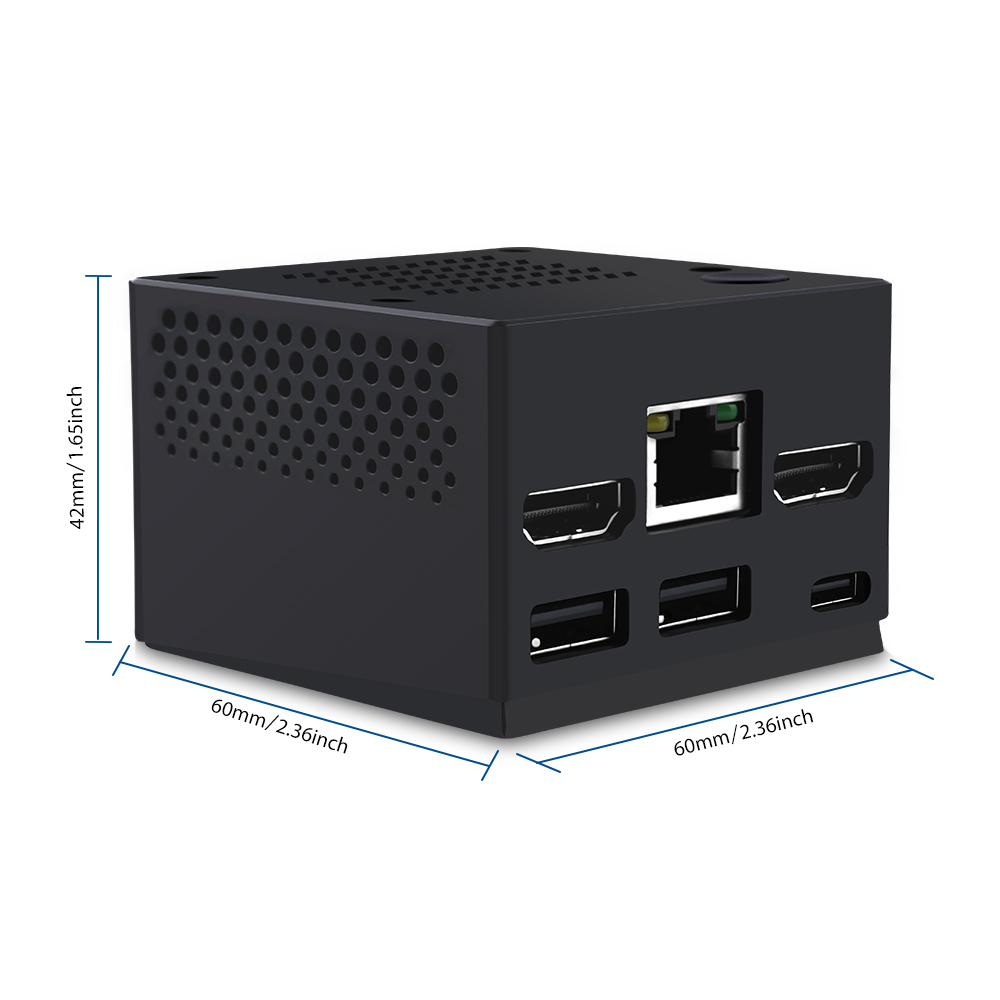
-
IPX antenna specifications
- Centre Frequency: 2400-2500MHz & 4900-5900MHz
- Connector: IPEX1
- Lead Length:
- Antenna Element Length: mm (+/- 1mm)
- Antenna Element Cable: 1.13 Coaxial cable, with plastic coating.
- Impedance: 5Ohm.
- Gain: About 3 dBi. 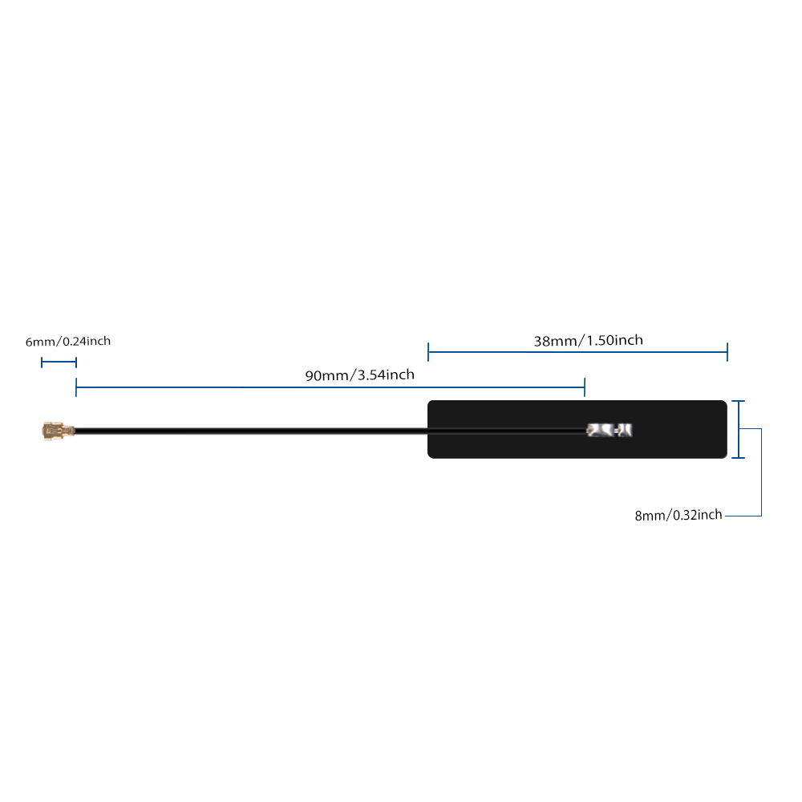
Install IPEX Antenna
Add the antenna as following figure, and then remove the protection film on back of the antenna, and then paste it inside the case. 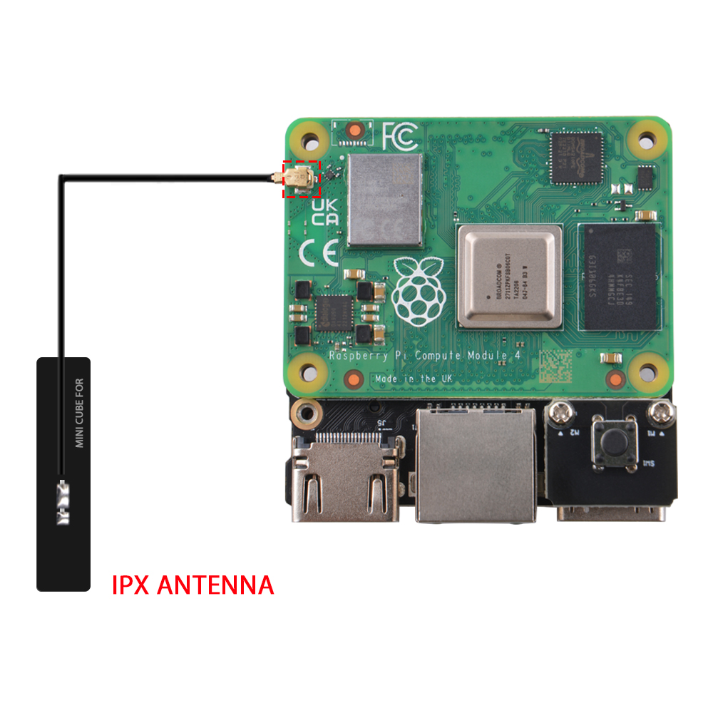
RTC Battery Information
ear RTC Battery dose not include in the package, additional purchase required!
* Fit for: laptop CMOS Battery, Recommended CR1220 3V with ZH1.25 Connector.
Package Includes
- 1 x DeskPi Mini Cube for Raspberry Pi computer module 4 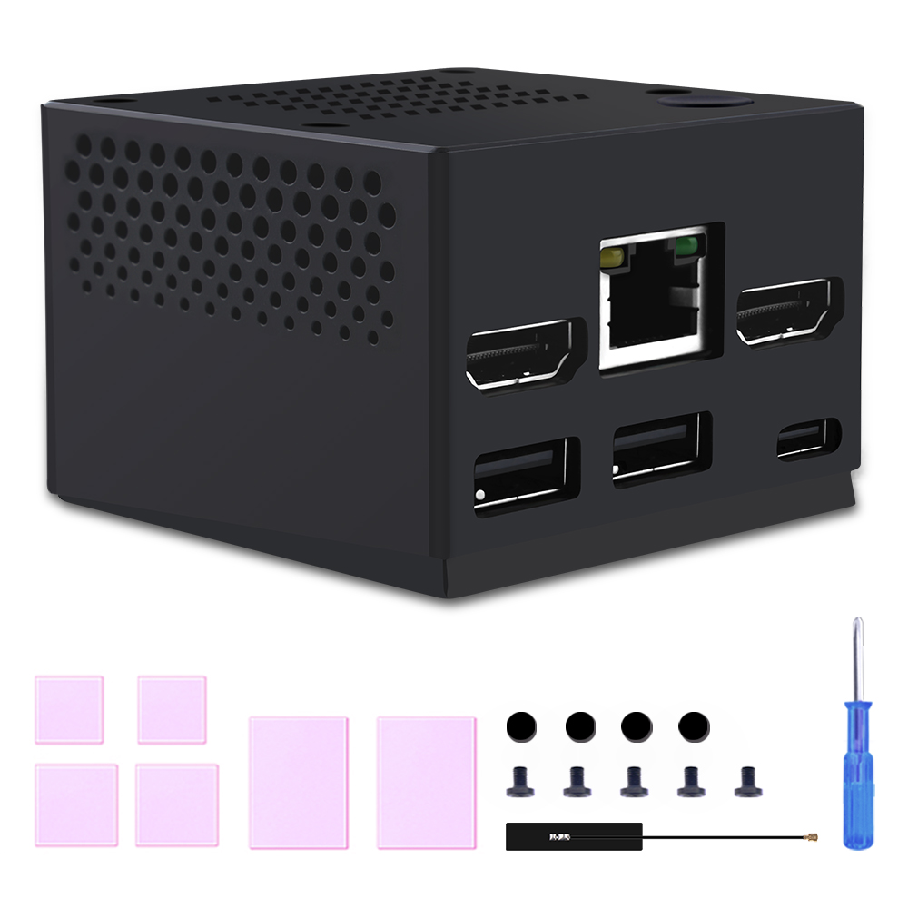
How to assemble it
- Step 1. Unloose four screws on top of mini cube.
- Step 2. Remove copper pillar and paste thermal pad on top of Raspberry Pi CM4 module.
NOTE：Please peel off the protection film on both side of the thermal pad. and press the Raspberry Pi CM4 module according to following figure, please be ware of the direction and angle when press the Raspberry Pi CM4 module.
- Step 3. Fix aluminum heat sink to Raspberry Pi CM4 module with copper pillars.
Please refer to following figure to assemble it.
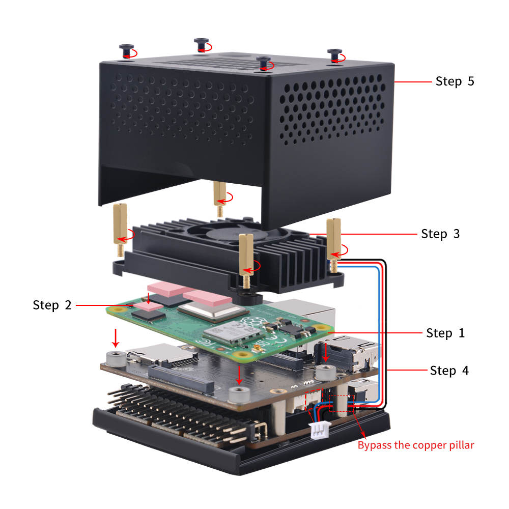
[Optional] Install M.2 NVME SSD M-KEY 2242/2240.
-
Remove the screws on bottom of mini cube and remove the PCB which is connected to mainboard on 40Pin GPIO.
-
Insert SSD drive into the slot in 45-degree angle and fix it with screw.
-
Cover it back to 40Pin GPIO and make sure it connect properly.
-
Fix the bottom case with screws. 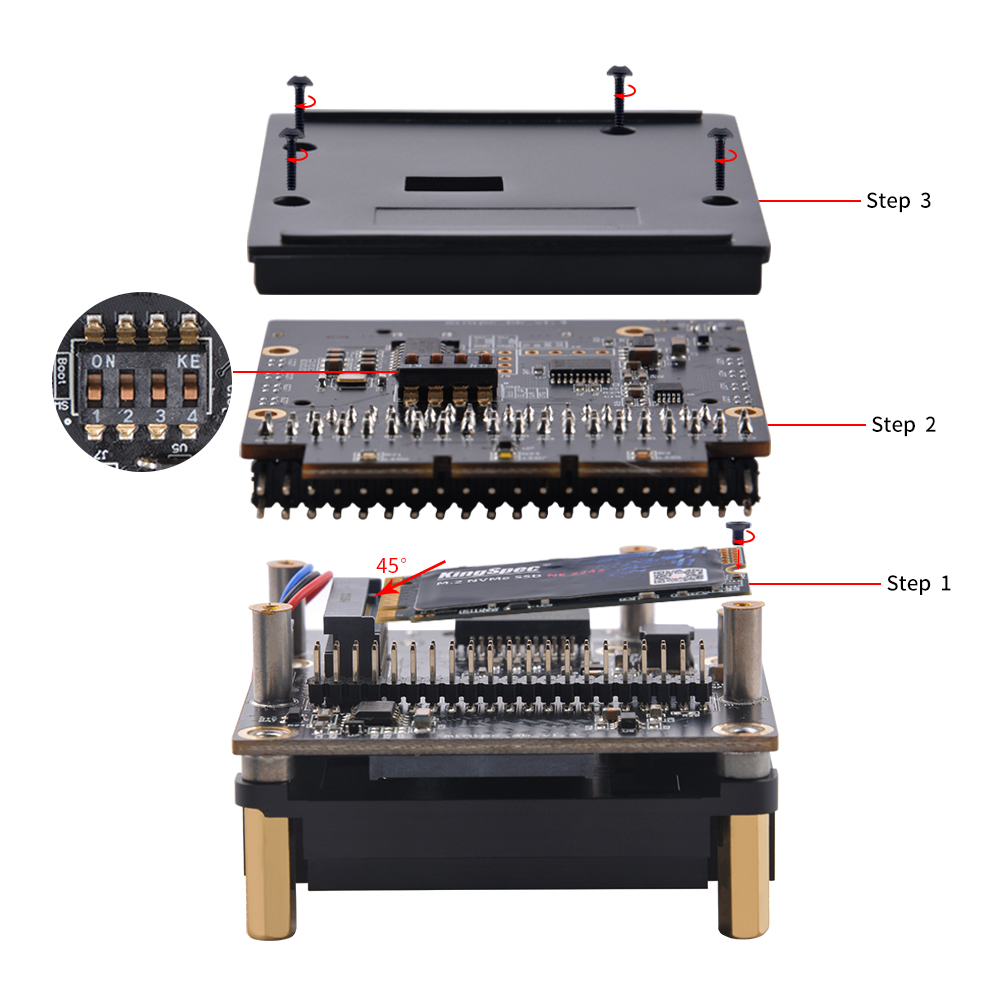
Functionality of power button:
- Short Press:
Power on - Long Press:
Power off (Cutoff power)
Please
NOTEthat if you have not shutdown the system, do not use long press to halt system, it will damage your system, it may cause kernel panic or lost file which are not saved yet.
- Correct Operation: Shutdown system in terminal or desktop, and then long press the button to cut off power.
DIP Switch Functionality

DIP Switch Pinout
- 1 - USB OTG Pull UP
- 2 - UNATTENDEND
- 3 - EEPROM_nWP (EEPROM write protection)
- 4.- nRPIBOOT (disable or enable eMMC Boot) 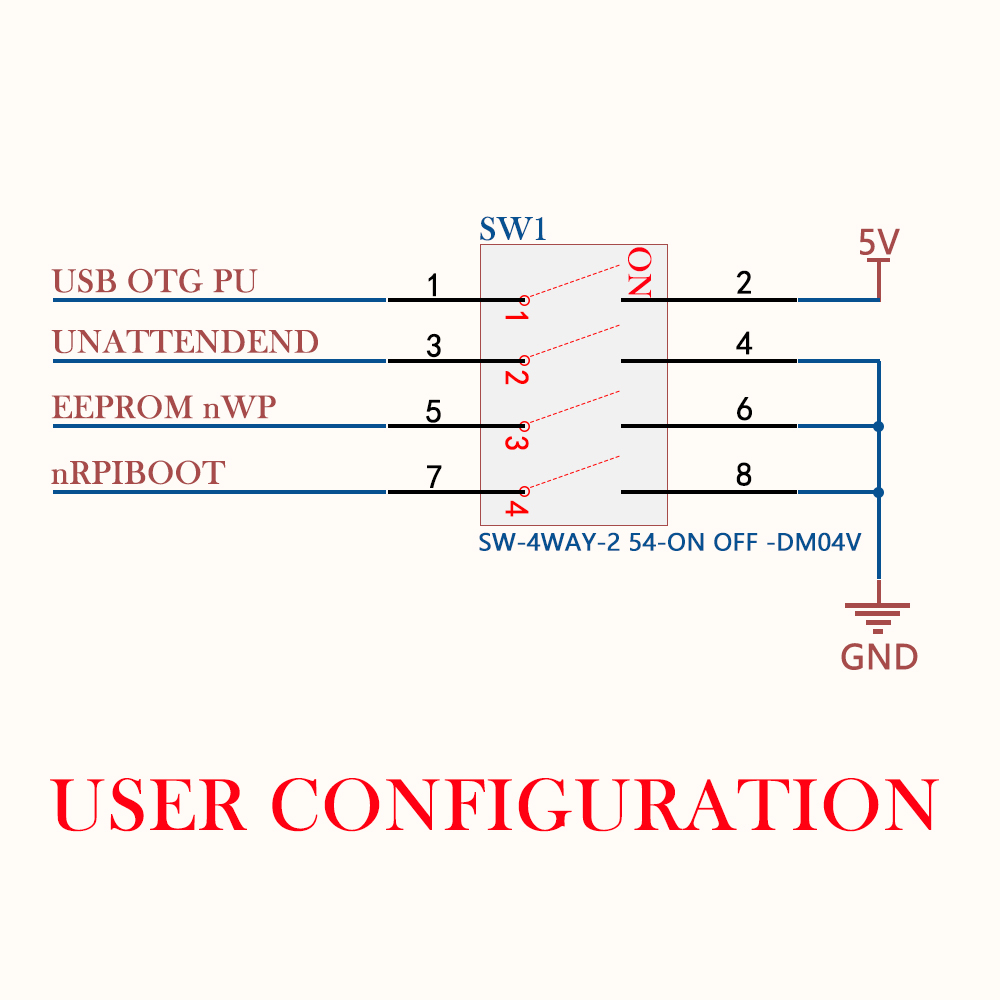
If you are using Raspberry Pi CM4 with EMMC onboard. please refer to this URL:
How to flash the Compute Module in section “Flashing the Compute Module eMMC”
Hardware write-protection must be enabled via software and then locked by pulling the EEPROM_nWP pin low.
How to enable USB2.0 ports besides the USB-C port?
Assume that you are using Raspberry Pi OS (64bit/32bit).
Adding following parameter into /boot/config.txt file and reboot your raspberry Pi.
dtoverlay=dwc2,dr_mode=hostHow to enable fan automatically?
** Assume that your operating system is Raspberry Pi OS (32bit/64bit) **
Official Fan setting
- Open a terminal and typing following command:
sudo raspi-config Navigate to Performance Options -> P4 Fan -> Yes -> 14 -> 60 -> yes -> finish -> reboot Raspberry Pi.
The fan is support PWM signal control via GPIO14 which is physical pin 12(TXD), it will spinning when the CPU temperature is above 60 degree.
and also you can write your code to control the fan via GPIO14, sending PWM signal will trigger the fan spinning.
Control Fan manually
Demo code
- Here is a demo code for controlling fan speed by using python script.
#!/usr/bin/python3
import RPi.GPIO as GPIO
import time
import subprocess
GPIO.setmode(GPIO.BCM)
GPIO.setup(14, GPIO.OUT)
pwm = GPIO.PWM(14,100)
print("\nPress Ctrl+C to quit \n")
dc = 0
pwm.start(dc)
try:
while True:
temp = subprocess.getoutput("vcgencmd measure_temp|sed 's/[^0-9.]//g'")
if round(float(temp)) >= 45:
dc = 100
pwm.ChangeDutyCycle(dc)
print("CPU Temp:",float(temp)," Fan duty cycle:",dc)
time.sleep(180.0)
if round(float(temp)) >= 40:
dc = 85
pwm.ChangeDutyCycle(dc)
print("CPU Temp:",float(temp)," Fan duty cycle:",dc)
time.sleep(120.0)
else:
dc = 70
pwm.ChangeDutyCycle(dc)
print("CPU Temp:",float(temp)," Fan duty cycle:",dc)
time.sleep(60.00)
except KeyboardInterrupt:
pwm.stop()
GPIO.cleanup()
print("Ctrl + C pressed -- Ending program")
Then execute it:
python3 fan_control.pyHow to enable onboard RTC module?
NOTE:
RTC battery sock type: ZH1.25
The battery dose not include in the package, additional purchase required!! * Step 1. Modify /boot/config.txt file and adding following parameter:Save it and please reboot your Raspberry Pi.dtoverlay=i2c-rtc,pcf85063a,i2c_csi_dsi,addr=0x51
- Step 2. Check if RTC module has been recognized by Raspberry Pi.
Execute following command in a terminal:
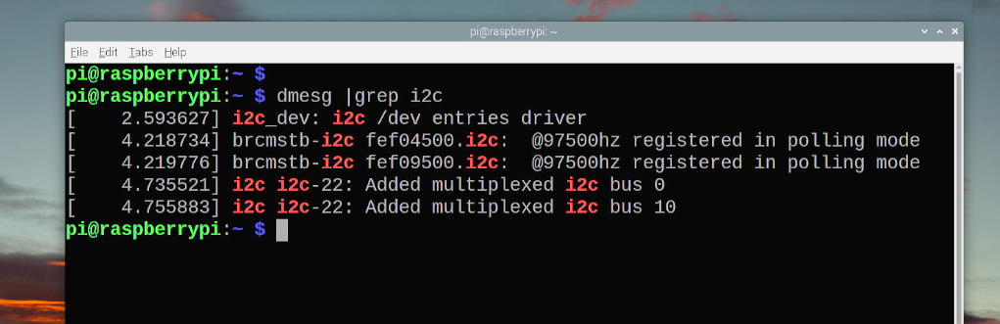dmesg |grep i2ci2cdetect -y 10NOTE: if command not found, please install
i2c-tools:
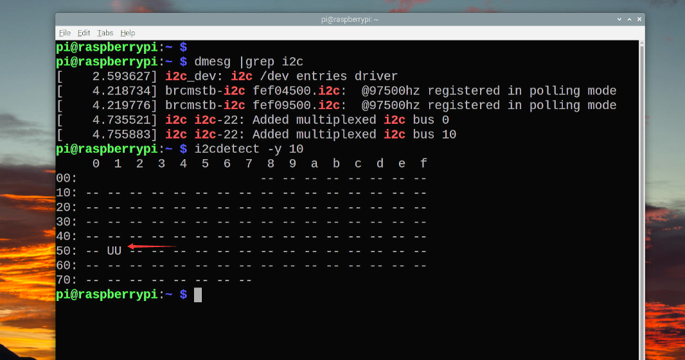sudo apt update sudo apt upgrade -y sudo apt -y install i2c-tool -
Step 3. Probe the module
rtc-pcf85063and check the kernel module status.
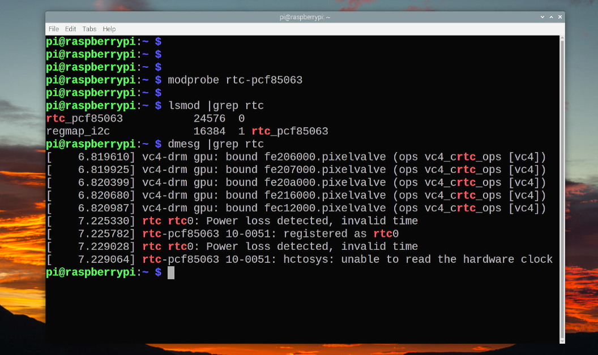modprobe rtc-pcf85063 lsmod |grep rtc -
Step 4. Setting system date and sychronized system time to Hardware clock time.
** Check RTC time in command line.
cat /proc/driver/rtc ** Setting system time Syntax
date [-u|--utc|--universal] [MMDDhhmm[[CC]YY][.ss]]sudo date -s 'tue oct 18 08:50:23 BST 2022'
or
sudo date 053118062023.22 ** Sychronizing system time to HW clock time.
sudo hwclock -wsudo hwclock ; dateFAQ
- Q: Dose it support NVMe SSD booting?
A: It has been tested, yes, it supports, but you may need to upgrade eeprom by using rpi-boot from official github repository.